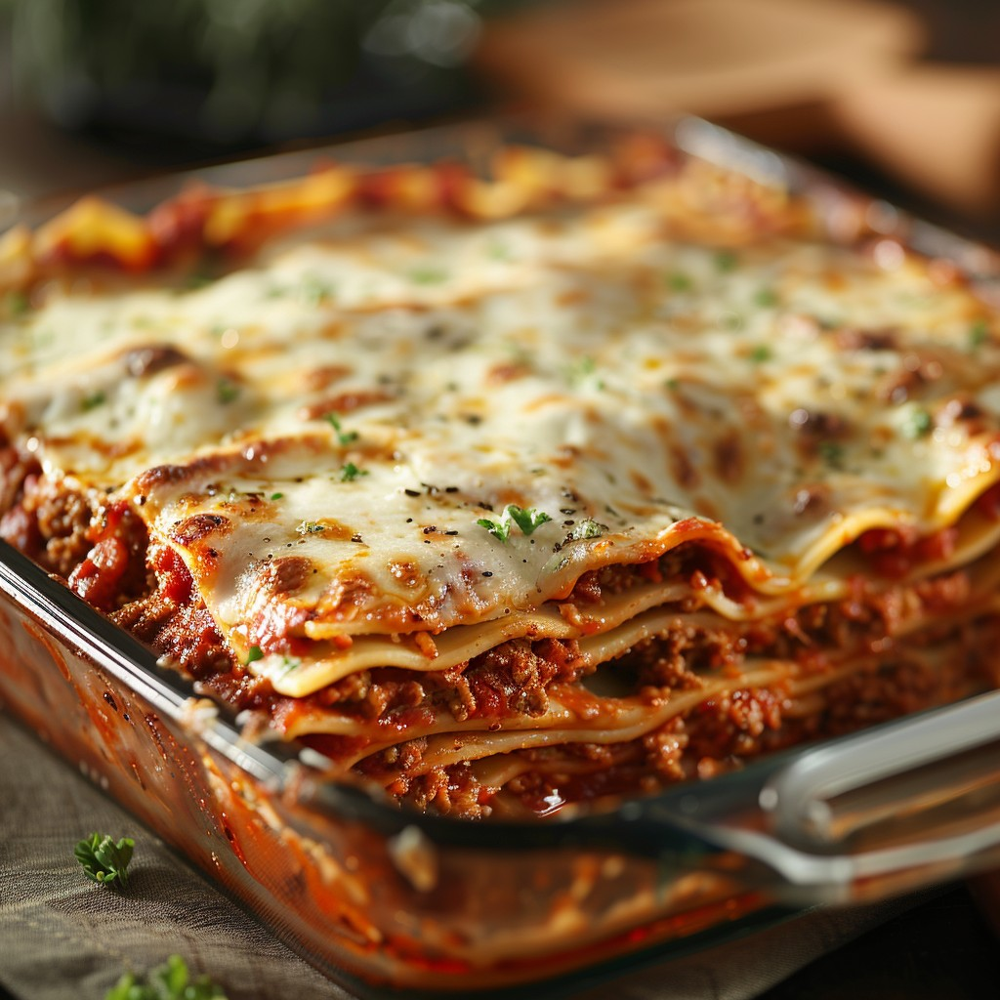

Home
Spaghetti and Meatballs Recipe

What Is Spaghetti and Meatballs?
Lasagna is a baked Italian pasta dish created by layering pasta sheets with filling and a tomato sauce. Today we are making a simple and delicious meat and cheese lasagna that is sure to delight your family and friends! Lasagna seems like a difficult dish to cook, but there are some simple shortcuts we can use to make the dish more approachable to beginner cooks. Here is a basic recipe to get you started on your culinary journey!
Ingredients for Spaghetti and Meatballs:
- Uncooked Lasagna Sheets
- Store-Bought Jarred Marinara Sauce
- Ground Beef
- Ground Sausage
- Ricotta Cheese
- Parmesan Cheese
- Mozzarella Cheese
- Italian Seasoning Blend
How to Make Spaghetti and Meatballs:
- Turn stove to medium-high heat and cook ground beef and ground sausage in a pot until brown, about 6-7 minutes.
- Add jar of marinara sauce and italian seasoning blend to pot. Let simmer for about 30 minutes.
- Boil pasta for 3-4 minutes until noodles are al dente, then add to cold water and remove. Lay pasta noodles out on a tray so they don't stick.
- Combine Ricotta, Parmesan, and Mozzarella cheeses in bowl with italian seasoning.
- Layer the lasagna beginning with noodles on the bottom; add meat mixture to the top of the noodles, then add the cheese mixture on top of the meat mixture. Add another layer of noodles on top of the meat, and continue upward until all ingredients are layered.
- Bake in oven until fully cooked. Let lasagna rest for 10 minutes after baking to redistribute flavors.
Dig In and Enjoy!
Thank you for checking out my lasagna recipe. If you enjoyed this recipe, you can check out my other recipes here.